Java™ 14 Support
The release notably includes the following Java 14 features:
- JEP 361: Switch Expressions (Standard)
- JEP 359: Records (Preview)
- JEP 368: Text Blocks (Second Preview)
- JEP 305: Pattern Matching for Instanceof (Preview)
Please note that the enable preview features option should be on for preview language features. For an informal introduction of the support, please refer to the Java 14 Examples wiki.
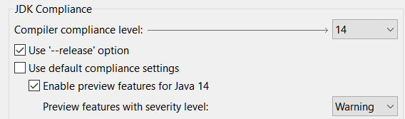
new_record template to create a record in an empty .java file:
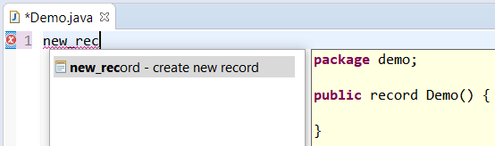
- Right Click on the Project > New > Record
- Right Click on the Project > New > Other and search for Record
- Right Click on the Project > New > Other > Java > Record
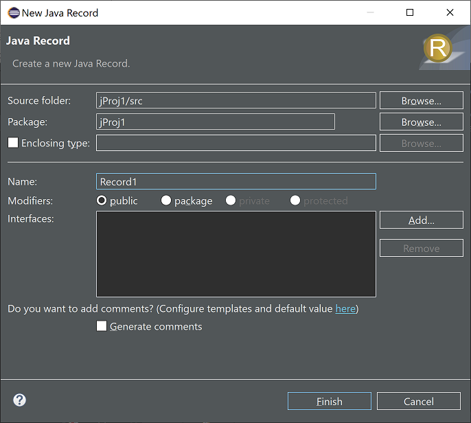
Note: In older workspaces the "Record" entry may not appear directly under the "New" menu in the Java perspective. To resolve this, either use a new workspace or launch eclipse with the option-clearPersistedState for your existing workspace.
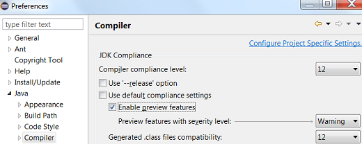
You can also change the default severity (warning) of the preview features compile problem in the opened Project properties dialog: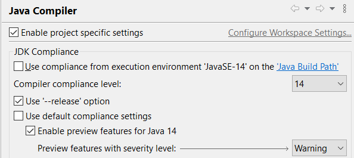
Java Editor
Users can restore the legacy behavior in Preferences > Java > Editor > Content Assist > Advanced by unchecking the
enable non-blocking completion checkbox; integrators
can change the value of the org.eclipse.jdt.ui.content_assist_noUIThread_computation to false.
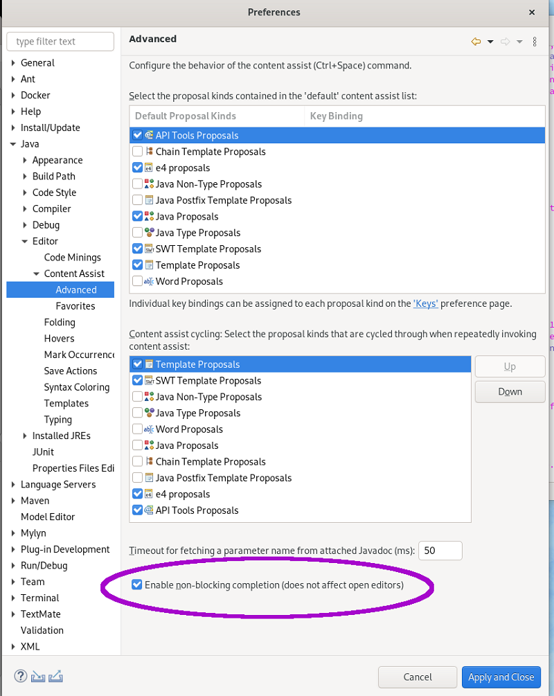
The code in the blocks should be the same.
An else block may be different and won't be merged.
One condition may be made opposite to allow the merge.
The conditions are merged with || to keep the control workflow the same.
Parenthesis is added to avoid priority issue.
Most of the brackets, formatting and comments are kept.
To select the clean up, invoke Source > Clean Up..., use a custom profile, and on the Configure... dialog select Merge conditions of if/else if/else that have the same blocks on the Unnecessary Code tab.
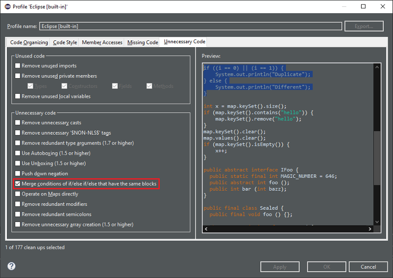
For the given code: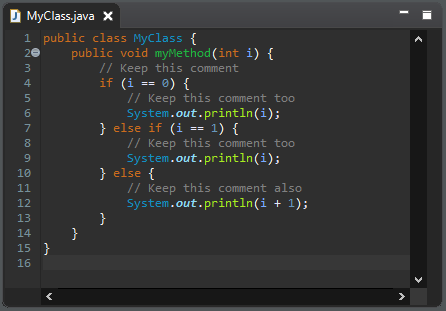
You get this after the clean up: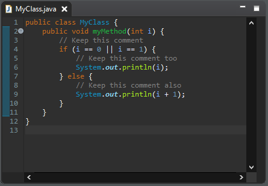
var keyword for the local variable when it is possible and is enabled only for Java 10 and higher.
The clean up replaces the explicit variable type by var when this type can be known by the variable initialization.
It also replaces the diamond operator in instance creation by a parameterized type.
Eventually, it adds a suffix to initialization number literal to match the variable type.
In any case, the variable type is still exactly the same.
To select the clean up, invoke Source > Clean Up..., use a custom profile, and on the Configure... dialog select Use the local variable type inference on the Code Style tab.
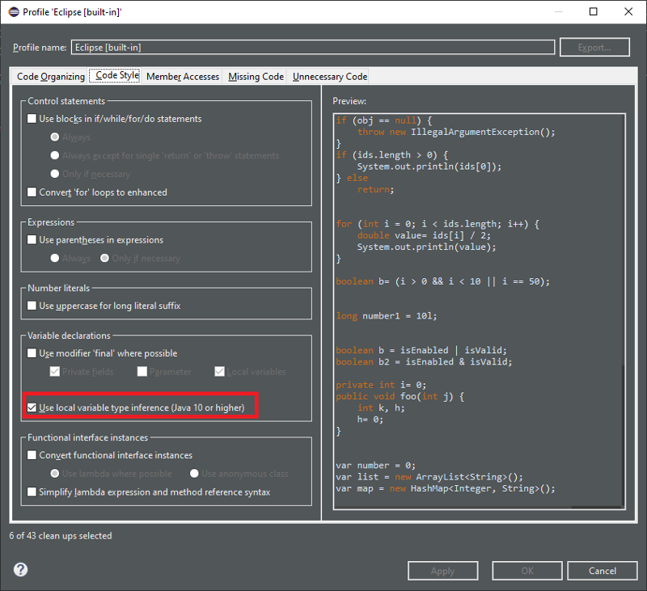
For the given code: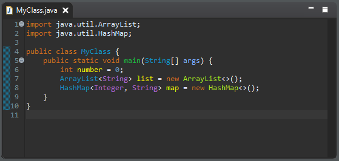
You get this after the clean up: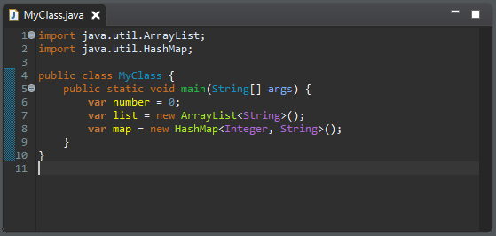
The clean up respectively replaces | and & by || and && when the following operands can't make side effect.
Any assignments, increments, decrements, object creations or method call may cause side effect.
So, in such case, it will keep the eager operator.
It also leaves the binary operations as it is.
To select the clean up, invoke Source > Clean Up..., use a custom profile, and on the Configure... dialog select Use the lazy logical operator on the Code Style tab.

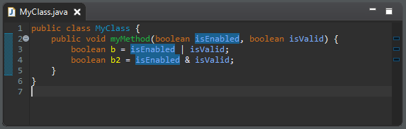
You get this after the clean up:
return statement in a Switch Expression to yield statement.
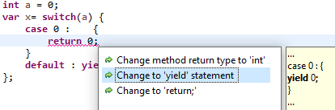
Java Formatter
record.
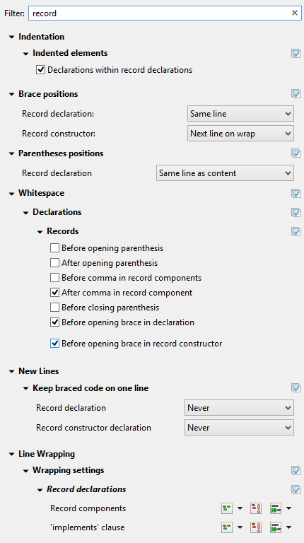
Debug
java.util.stream.ReferencePipeline.filter(Predicate<? super P_OUT>)
and inspecting the predicate variable.
Before:
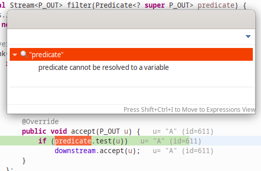
Now:
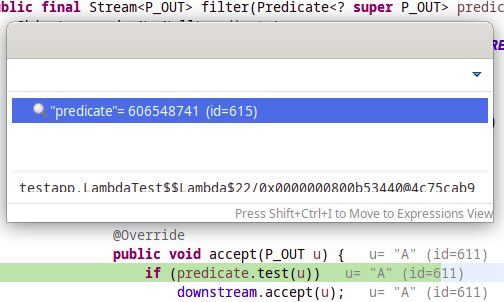
Preferences
Any application or user can still disable it using the VM property: -Djdt.codeCompleteSubstringMatch=false